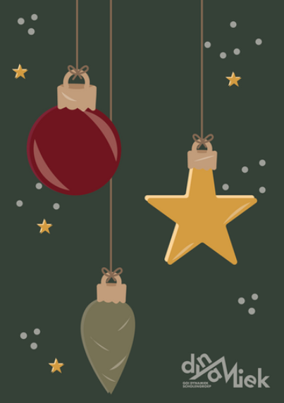
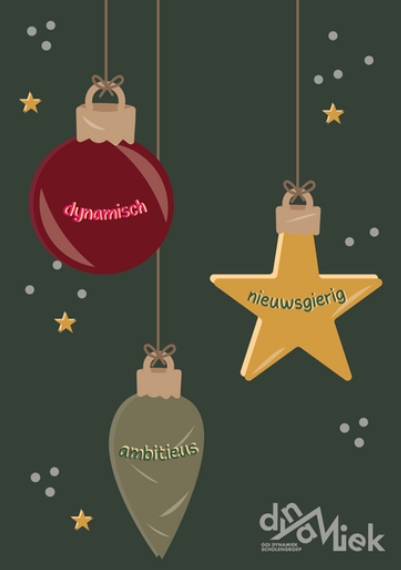
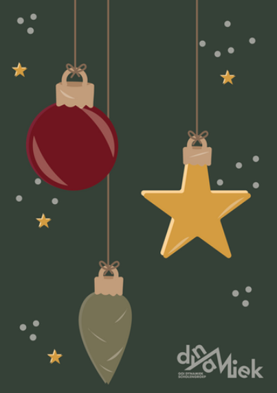
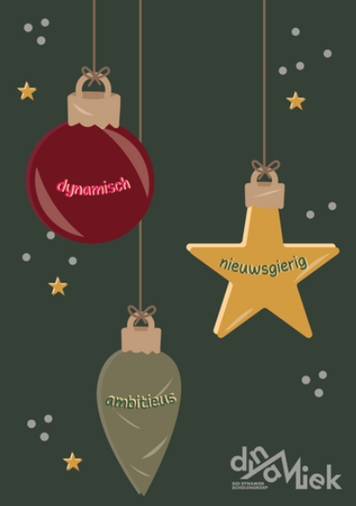

Dynamiek
Kerstkaart – 2024
Voor school Dynamiek ontwierp ik een kerstkaart waarin ik bewust heb gekozen voor een speelse stijl en warme kleuren. Het ontwerp is volledig uitgewerkt in Adobe Illustrator. 12-10-2024 – 18-10-2024
 


